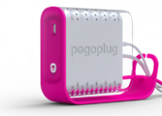

Open Source Hardware Hacking with the PogoPlug

By Guest Blogger Matthew Sacks, The Bitsource
Brad Dietrich, is the CTO and co-founder of Cloud Engines, Inc. Brad graduated from Carnegie Mellon University with a Bachlors of Science in Electrical and Computer Engineering, and in Computer Science. He also is a published author and a contributor to several open source projects.
The PogoPlug is a multimedia-sharing device, which connects up to four external hard drives and makes them securely accessible from any Web browser connected to the Internet. The PogoPlug is built using open source Linux and other open source software and encourages its users to modify it. It is simple enough for an end-user to use as designed, or for an experienced software developer to extend and build upon it’s open source platform and Web API’s.
I spoke with Brad about the PogoPlug and how it’s utilization of open source technology makes it an effective product for both the consumer and end user.
Q: The PogoPlug is easy to use for end-users, as well as advanced enough to where software developers can modify the code it runs, why did you go with an open platform versus a closed platform?
Brad Dietrich: Traditional consumer electronics companies lock down their products such that the enthusiasts and developers cannot change the firmware that allows them to run. The decisions to do this are driven for many reasons ranging from concerns about support costs to mandates from the content publishers. Ultimately we wanted to break the mold of consumer electronics in more ways than one. We wanted to create a product that was easy to use for technology neophytes yet provides enough value for technology enthusiasts. Opening the platform allowed us to give truly advanced users a reason to be excited by the Pogoplug above and beyond the core features we provide without sacrificing the ease of use necessary for the main stream customers.
Q: What are some of the open source projects that the PogoPlug has contributed to?
Brad Dietrich: All of the open source that we use in the Pogoplug is published on our site at http://pogoplug.com/opensource/. We have made improvements and customizations to many of these projects to allow them to work better for our products needs. All of these improvements and customizations are published and contributed back to anyone who finds value in them.
Q: Has CloudEngines benefitted by offering the PogoPlug with an open soruce software platform?
Brad Dietrich: All new technology products (especially those from new companies) face an uphill climb to reach main-stream adoption. Pogoplug was designed to leverage social behaviors and thus extend the product's success through word-of-mouth and the viral nature of the media sharing features. We realized that the first users to use the product could be our biggest allies, and since developers and open source enthusiasts are a large overlap with technology product early adopters, it is to our advantage to excite them to enjoy and recommend the product.
Q: The PogoPlug is really modifiable in every way, down to the Firmware, how can developers start writing and modifying code on the PogoPlug?
Brad Dietrich: The Pogoplug is fundamentally a headless ARM Linux computer. We provide open root ssh access to the device so users can start from bash shell prompt and the ability to fully cross compile and run any binaries they desire. Some of our users have even installed full versions of Ubuntu Linux distribution for ARM.
Q: Cloud Engines hosts user forums that are designed to provide technical interaction between developers and enthusiasts interested in getting deeper into the Linux computer that is the Pogoplug at http://www.pogoplugged.com/. These forums are monitored by the engineers and product folks here so we can help steer developers in the best ways to leverage our platform for their needs. What ever your technical level is from kernel hacker to casual Linux user, these forums can aid you in getting started and finding others who are trying to solve similar development goals.
Q: What are the benefits of utilizing open source for the software stack on the PogoPlug?
Brad Dietrich: Linux and some of the other core open source projects we are using allow us to focus on true innovation rather than reinventing the wheel. The ability to review and modify anything and everything allows us the flexibility to add real value with our product without being bound by some other company or individual’s idea of how the software should be written yet doesn't require us to reinvent things that work and that can be leveraged.
Obviously there are proprietary solutions that provide solutions for many of the technology requirements, but as mentioned above, the benefits of using and contributing to the open source community has tangible value for our company.
Q: What are some features developers have done with the Webservices API? The Kernel?
The forums are the best place to see some of the things out there, but they range quite a bit. If there is a Linux package out there, it has probably been cross-compiled to run on the Pogoplug already. The web services APIs are being used from mobile media player companies to individuals who are interested in better ways to access their own content. The sky truly is the limit.
Further Reading